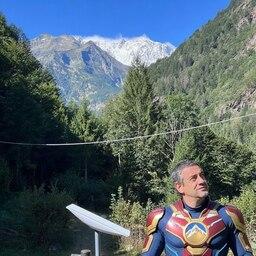

Andrea Nelson Mauro
Entrepreneur: co-founder of Ondata.it, Datapitch.it, Dataground.it, Dataninja.it
Trainer, Data Journalist: Open Data, Data Viz, Artificial Intelligence, Vibe Coding
I teach at: Università di Bologna, Università della Repubblica di San Marino, MIP Politecnico di Milano, Università di Milano-Bicocca (Data Science degree), Master in Giornalismo Walter Tobagi (Milan), Master in Giornalismo - Università di Bologna, and the Order of Journalists of Lombardy and Emilia-Romagna
About Me
Entrepreneurship, journalism and training, at the intersection of data and AI
Work and Research
I'm an entrepreneur, journalist and digital skills expert, focused on Open Data, Data Analysis, Data Visualization, Data Journalism, Artificial Intelligence and Vibe Coding. Since 2012 I've designed and delivered training for universities, public administrations, companies and nonprofits, at national and European level. I'm also a Research Fellow at the National Research Council of Italy's Institute for Educational Technologies (CNR-ITD), working on data and AI literacy, and I contributed to the translation and revision of DigComp, the EU's digital competence framework.
Collaboration
Over the years I've been working on numerous Erasmus+ projects with European Universities, Philanthropic Foundations and companies. I have been collaborating with public administrations — including Regione Piemonte, Regione Lombardia, Regione Emilia-Romagna and ANCI (the National Association of Italian Municipalities) — on Open Data and AI, worked as a data journalist for Repubblica - L'espresso, Corriere della Sera, SKYTG24, and consult on technology development for Il Sole 24 Ore's digital projects. I've received the Data Journalism Award and the European Press Prize for data-driven projects built with my team.
Entrepreneurship
I'm the co-founder of Ondata.it (open data advocacy), Datapitch.it (digital skills training), Dataground.it (AI technology) and Dataninja (data journalism) — data has been my bread, and my study, for almost 15 years.
Teaching
Since 2014 I've been teaching data journalism, data visualization, data and AI skills at the University of Bologna, the University of the Republic of San Marino, MIP Politecnico di Milano, the University of Milan-Bicocca (Data Science degree), the Walter Tobagi Master's in Journalism and the Bologna Master's in Journalism, as well as for the Order of Journalists of Lombardy and Emilia-Romagna.
What I Do
A focused set of activities, spanning journalism, business and training
Founding & Growing Data Ventures
Co-founder of Datapitch, Dataground, Dataninja and Datamediahub.
Data Journalism
Reporting and data-driven stories for Italian and European outlets since 2012.
Training on Data & AI
Courses for universities, public administrations and companies across Italy and Europe.
Skills & Tools
What I reach for every day, between the newsroom and the codebase
A blend of journalism, data and engineering.
I move comfortably between the story and the dataset, which means the numbers stay accurate from source to publication. Here's where I spend most of my time.
Experience
The roles and milestones that shaped how I work today
Work
Research Fellow
National Research Council of Italy (CNR) — Institute for Educational TechnologiesCo-designed the didactic framework for the DEDALUS Erasmus+ project on data literacy for university students.
Senior Trainer
MIP Politecnico di Milano · Milan, ItalyDesigning and delivering courses on open data, interoperability, AI for public services and business intelligence for public administration executives and officials.
Co-Founder, Business Partner & Senior Trainer
Dataninja srl · Bologna, ItalyBuilt and coordinated the company, its didactic projects, business development, and technology team. Left in 2024 (my first exit).
Co-Founder & Project Manager
Ondata APS · Palermo, ItalyCo-ideated and implemented European projects for the nonprofit, covering concept, proposal writing, delivery and reporting.
Education & Awards
Modern Literature
University of Messina, ItalyEQF Level 7.
Data Journalism Award
World's leading data journalism prizeWon with the data-driven products built by my team at Dataninja.
European Press Prize
Leading European journalism prize, digital categoryWon with the data-driven products built by my team at Dataninja.
The European Digital Skills Awards
European CommissionWon for "Open the Box," Dataninja's data & AI literacy program for Italian secondary schools.
Data Ventures
The companies and initiatives I've co-founded, in order
Dataninja.it — Co-founder (my first exit) 🎉
A data journalism company working with newspapers and media outlets across Italy and Europe. Winner of the Data Journalism Award, the European Press Prize, and The European Digital Skills Awards.
Datamediahub.it — Co-founder
An independent, data-driven observatory analyzing Italian media, journalism and publishing trends — newspaper sales and readership, media groups' finances, digital subscription models, brand journalism and international reports. Co-founded with Pier Luca Santoro, Alessio Cimarelli, Massimo Gentile and Lelio Simi.
Selected European Projects
EU-funded projects (Erasmus+, CERV, Creative Europe) I've designed and co-coordinated
DAPHNE — 2026–2028
European project addressing the growing need for skills in Data Journalism, Artificial Intelligence and Communication.
AwareEU — 2024–2025
Achieve Wide Awareness of EU REsults, with ActionAid International Italia.
XQ.EUJOY — 2023–2025
European Youth Journalism: the why of the news.
SMERALD — 2023–2025
Raising awareness and learning on digital data, data analysis and artificial intelligence for SMEs.
Digital Literate — 2023–2025
Digital and Media literacy for education.
WEBJOU — 2022–2024
Western Balkan higher educational courses in data journalism.
EDJNet — 2021–2023
European Data Journalism Network: a network of European newsrooms producing cross-border, data-driven journalism.
DALFYS — 2021–2023
Data Literacy for young students towards STEAM education.
DATALITERATE — 2021–2023
Digital Data Literacy for Education in Secondary Schools.
JOULE — 2021–2023
Data Journalism Courses for Higher Education.
DEDALUS — 2020–2022
Developing Data Literacy courses for university students.
DATALIT — 2020–2021
Data Literacy at the interface of higher education and business.
ACT — 2019–2021
Anti-corruption project with Transparency International Italia, funded under the Internal Security Fund.
Latest Updates
Recent posts from my LinkedIn Profile
Loading latest updates…